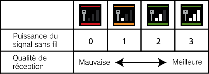

|
11
|
Connecter une DS
|
 |
|
Voilà ce dont tu as besoin pour déposer ou retirer des Pokémon et les transférer depuis/vers un jeu Pokémon Diamond ou Pokémon Pearl pour la Nintendo DS. Conditions requises
Tu dois avoir le Pokédex et une Poké Ball dans Pokémon
Diamond ou Pokémon Pearl.
Ce dont tu as besoin
Une Nintendo DS
ou une Nintendo DS Lite
Une carte de jeu DS Pokémon
Diamond ou Pokémon Pearl
* Tu peux utiliser seulement la version anglaise de la carte de jeu Pokémon Diamond ou Pokémon Pearl. Si tu es prêt à te connecter, réfère-toi aux explications données au chapitre 12. Procédures de connexion à une DS.
Remarques
concernant le jeu sans fil
Merci de bien noter les points suivants pour jouer sans fil. Une icône sur la Nintendo DS ou
dans un menu du jeu signale une communication sans fil .
Lorsque tu joues en mode sans fil, une icône s'affiche dans
l'écran supérieur ou dans l'écran tactile pour indiquer la puissance
du signal sans fil. L'icône  * Ta console DS se trouve en mode sans fil si le témoin d'alimentation clignote rapidement (en vert ou en rouge). Remarques importantes concernant
les communications sans fil :
|

 |
 |
 |